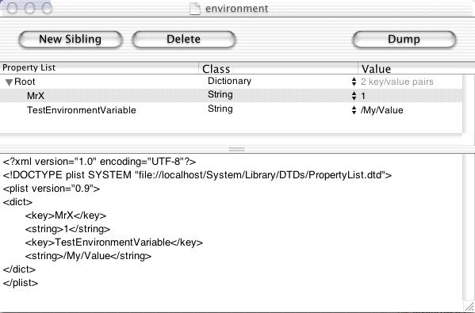

Q:
How do I set environment for all processes launched by a
specific user?
A:
It is actually fairly simple process to set environment variables
for processes launched by a specific user.
There is a special environment file which loginwindow searches
for each time a user logs in. The environment file is: ~/.MacOSX/environment.plist
(be careful it's case sensitive). Where '~' is the home directory
of the user we are interested in. You will have to create
the .MacOSX directory yourself using terminal (by typing
mkdir .MacOSX). You will also have to create
the environment file yourself. The environment file is actually
in XML/plist format (make sure to add the .plist
extension to the end of the filename or this won't work). An example
environment file is shown below. The file was created using
/Developer/Applications/PropertyListEditor.app

Here the environment variables TestEnvironmentVariable and
MrX are set to
/My/Value and 1 respectively, every time that specific user logs in. You
can add more environment variables by adding new siblings to the property
list using the 'New Siblings' button shown above.
Note that the key class must be string. If any other class is used the key
will not be recognized by loginwindow. You can confirm the environment variables
have been set as expected by typing setenv into terminal.
Additional Note: On early builds of OSX (specifically 10.0.4 and earlier) the
file used was
~/.OpenStep/environment instead of ~/.MacOSX/environment.plist.
(note that the .plist extension is missing on 10.0.4 and earlier). The answer to your next question is: Yes, this is a relic left over from
OpenStep/NextStep.
[Oct 25 2001]
|